Table of Contents
- The QuickHull convex hull algorithm
- Computing convex hulls and Delaunay cell complex using QuickHull
- Using ConvexityHelper for convex hull and Delaunay services
- Building a lattice polytope (nD)
- Building the boundary of a lattice convex hull as a surface (3D)
- Building the convex hull cell complex of lattice points (nD)
- Building the Delaunay cell complex of lattice points (nD)
- Building a rational polytope (nD)
- Building the boundary of a rational convex hull as a surface (3D)
- Building the convex hull cell complex of real points (nD)
- Building the Delaunay cell complex of real points (nD)
- Author(s) of this documentation:
- Jacques-Olivier Lachaud
- Since
- 1.2
Part of the Geometry package.
This part of the manual describes the DGtal implementation of the famous "QuickHull" algorithm by Barber et al. [9] , and how to use it to compute convex hulls and Delaunay convex cell decompositions.
The following programs are related to this documentation: exampleLatticeBallQuickHull3D.cpp , exampleLatticeBallDelaunay2D.cpp , exampleRationalBallQuickHull3D.cpp , exampleRationalBallDelaunay3D.cpp , exampleQuickHull3D.cpp , testQuickHull.cpp , testConvexityHelper.cpp
The QuickHull convex hull algorithm
The objective of the QuickHull algorithm is to compute the convex hull of a set of points V lying in a space of arbitrary dimension d (here d is greater than one). This algorithm has the limitation to only process full dimensional convex hulls, because of the way it is initialized. It maintains and updates a list of facets (which defines the faces of the current polytope) by following these steps:
- Initialization: an initial d-dimensional simplex is built with \( d+1 \) facets. Furthermore, each remaining point of V is associated to one of these facets if it is above it. Hence, each point of V is either associated to no facet and is thus already inside the current hull, or it is associated to only one facet. Points on each facet and neighbors of facets are computed (easy for a simplex) and all the facets are then queued.
- While the queue of facets is not empty, the front facet f is popped.
- ignore it if contains no "above" point(s)
- otherwise pick the furthest above point p
- find by neighbor adjacencies from f all the facets visible from p (i.e. p is above them)
- define the horizon H as the set of ridges R, where a ridge is a pair of two neighbor facets, where the first is visible from ^, whilst the second is not.
- define the new facets as the ones formed by the umbrella from p to its ridges.
- merge possible parallel facets and update "on" points
- reassign "above" points of f to these new facets and put them into the queue
- The algorithm stops when all current facets have no "above" points.
- Optionnaly extract vertices of the convex hull polytopes by determining the "on" points that belong to at least d facets.
- Note
- In opposition to the usual
qhullimplementation, this class uses a kernel that can be chosen in order to provide exact computations. This is the case for lattice points, but also rational points. Computation times are very similar. -
In opposition to
CGAL 3D convex hullpackage, or with the arbitrary dimensionalCGAL dD Triangulationpackage, this algorithm does not build a simplicial convex hull. Facets may not be triangles or simplices in higher dimensions. This happens frequently for lattice points, where coplanar and cospherical situations are common. -
This version is generally more than twice faster than
CGALfunctionconvex_hull_3for the usual CGAL kernels Cartesian and Exact_predicates_inexact_constructions_kernel. - However this implementation is not tailored for incremental dynamic convex hull computations.
- Last, the method for computing the Delaunay triangulation by using the convex hull in a higher dimensional space is generally much slower than CGAL method for computing the Delaunay triangulation by point location (5-10 times slower in our experience).
Computing convex hulls and Delaunay cell complex using QuickHull
In order to get a fine control over convex hull computations, you can use class QuickHull directly. It is required to choose a kernel specific to your objective. For now, the available kernels are:
- ConvexHullIntegralKernel : it allows the computation of the convex hull of a range of lattice points in arbitrary dimension.
- ConvexHullRationalKernel : it allows the computation of the convex hull of a range of rational points in arbitrary dimension. The user fixes the precision at kernel instantiation.
- DelaunayIntegralKernel : it allows the computation of the Delaunay cell complex of a range of lattice points in arbitrary dimension.
- DelaunayRationalKernel : it allows the computation of the Delaunay cell complex of a range of rational points in arbitrary dimension. The user fixes the precision at kernel instantiation.
- Note
- All kernels are parametrized by the dimension of input points, the integer type
CoordinateIntegerused for representing lattice points, and the integer typeInternalIntegerused internally in facet and normal computations, as well as above predicates. Depending on your input (amplitude of coordinates and number of dimensions), you must choose consistently in order to get correct results. Default parameters are DGtal::int64_t for both.
As a rule of the thumb, determinant computations raise integers to the power of the dimension, hence the choice of DGtal::BigInteger (requires WITH_GMP) for InternalInteger is compulsory when \( N^d \ge 4.10^{18} \), for \( N \) the maximum norm of input points and \( d \) the dimension. When CoordinateInteger is DGtal::int64_t, then the following table sums up these rules.
| \( d \) dimension | max \( N \) for DGtal::int64_t | max \( N \) for DGtal::BigInteger |
|---|---|---|
| 2 | \( \approx 2e9 \) | \( \approx 4e18 \) |
| 3 | \( \approx 1.5e6 \) | \( \approx 4e18 \) |
| 4 | \( \approx 4e4 \) | \( \approx 4e18 \) |
| 5 | \( \approx 5e3 \) | \( \approx 4e18 \) |
| 6 | \( \approx 1.2e3 \) | \( \approx 4e18 \) |
If you use rational kernels with a given precision \( p \), you should divide the above values by \( p \).
- Note
- With respect to the choice DGtal::int64_t for both
CoordinateIntegerandInternalInteger, expect a 25 times slow-down factor if you use DGtal::BigInteger forInternalInteger, and a 35 times slow-down factor if you use DGtal::BigInteger for bothCoordinateIntegerandInternalInteger.
Convex hull of lattice points
To compute the convex hull of lattice points, you need to include QuickHull.h.
You should then define some typedefs:
Then we assume that V contains a range of lattice 3D points (with either 32 bits or 64 bits precision). You may compute their convex hull (facets and vertices) with (QuickHull::setInput and QuickHull::computeConvexHull):
You may check computation times with (QuickHull::timings)
You can easily retrieve the vertex positions with QuickHull::getVertexPositions (you can put them in a vector of real or lattice points), and get the consistently oriented vertices for each face with QuickHull::getFacetVertices. Below we show how to build a SurfaceMesh that represents the convex hull boundary and save it as OBJ file.
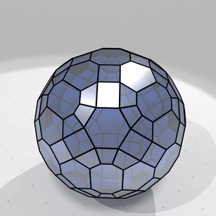
Convex hull of lattice ball with radius 12.5 |
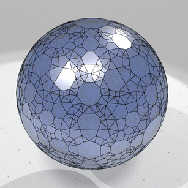
Convex hull of lattice ball with radius 25 |
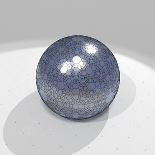
Convex hull of lattice ball with radius 50 |
To give an idea of computation times, for 1e7 lattice points randomly chosen in a ball of radius 1000, computations times are as follows on a Macbook pro (processor 2,7 GHz Quad-Core Intel Core i7, memory 16 GB 2133 MHz LPDDR3):
examples/geometry/tools/exampleLatticeBallQuickHull3D 10000000 1000 #points=9990515 #vertices=14183 #facets=28036 purge duplicates= 4221 ms. init simplex = 223 ms. quickhull core = 3214 ms. compute vertices= 255 ms. total time = 7913 ms.
- Note
- Half of the time is spent on removing duplicated input points. If you know that your range of points does not contain duplicates, you can specify it to QuickHull::setInput.
Convex hull of rational points
QuickHull cannot handle exactly "real" points, but can handle rational approximations of such points. The user must specify a precision, the rational denominator, at kernel creation. To compute the convex hull of rational points, you need to include QuickHull.h.
You should then define some typedefs:
Then we assume that V contains a range of real 3D points (with double precision). You may compute their approximate convex hull (facets and vertices) with the following lines (QuickHull::setInput and QuickHull::computeConvexHull):
The precision is the denominator used for representing rational coordinates. Real points with double precision are rounded to these nearest rational coordinates.
- Note
- Different real points may be rounded to the same rational point.
You may check computation times with (QuickHull::timings)
You can easily retrieve the rational vertex positions with QuickHull::getVertexPositions (you can put them in a vector of real points), and get the consistently oriented vertices for each face with QuickHull::getFacetVertices. Below we show how to build a SurfaceMesh that represents the convex hull boundary and save it as OBJ file.
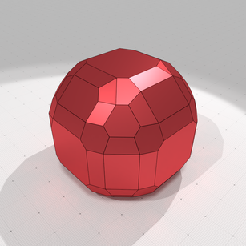
Convex hull of rational ball with radius 10.5 with precision 1 |
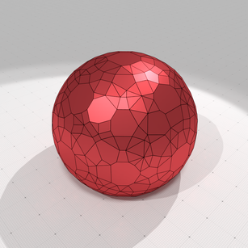
Convex hull of rational ball with radius 10.5 with precision 2 |
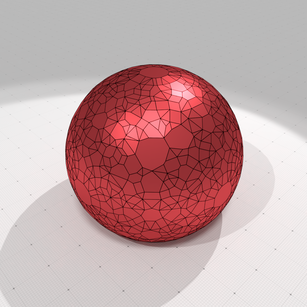
Convex hull of rational ball with radius 10.5 with precision 4 |
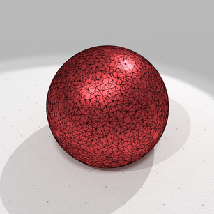
Convex hull of rational ball with radius 10.5 with precision 16 |
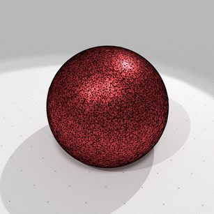
Convex hull of rational ball with radius 10.5 with precision 128 |
Convex hull of rational ball with radius 10.5 with precision 1024 |
To give an idea of computation times, for 1e7 real points randomly chosen in a ball of radius 1000, computations times are as follows on a Macbook pro (processor 2,7 GHz Quad-Core Intel Core i7, memory 16 GB 2133 MHz LPDDR3), for a precision of 1024:
examples/geometry/tools/exampleRationalBallQuickHull3D 10000000 1000 1024 #points=10000000 #vertices=14267 #facets=28503 purge duplicates= 4049 ms. init simplex = 322 ms. quickhull core = 3271 ms. compute vertices= 239 ms. total time = 7882 ms.
- Note
- Half of the time is spent on removing duplicated input points. If you know that your range of points does not contain duplicates, you can specify it to QuickHull::setInput.
- If you choose a too big precision, integer computations required by convex hull computations might overflow. You may consider using DGtal::BigInteger at least for the internal integer representation.
Delaunay cell complex of lattice points (2D example)
Computing the Delaunay complex of lattice points is very similar to computing its convex hull. You should just use the appropriate kernel as follows:
Then we assume that V contains a range of lattice 3D points (with either 32 bits or 64 bits precision). You may compute their Delaunay complex hull (facets and vertices) with (QuickHull::setInput and QuickHull::computeConvexHull):
You can easily retrieve the vertex positions with QuickHull::getVertexPositions (you can put them in a vector of real or lattice points), and get the consistently oriented vertices for each cell with QuickHull::getFacetVertices.
In opposition with convex hull computation, facets here designate the d-dimensional Delaunay cells (here d=2). You also have finite facets (the ones within the convex hull) and infinite facets (the ones of the furthest site Delaunay decomposition). Below we show how to build a SurfaceMesh that represents the finite Delaunay cells and save it as OBJ file.
- Note
- If you wish to visit the infinite facets, you may start from facet numbered
hull.nbFiniteFacets().
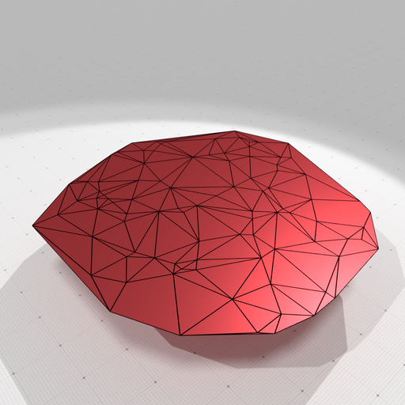
Delaunay cell decomposition of 100 randomly chosen points in a lattice ball with radius 20 |
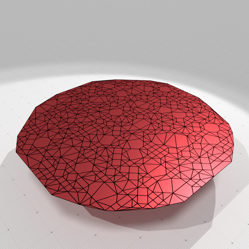
Delaunay cell decomposition of 1000 randomly chosen points in a lattice ball with radius 20 |
To give an idea of computation times, for 1e6 lattice points randomly chosen in a ball of radius 1000, computations times are as follows on a Macbook pro (processor 2,7 GHz Quad-Core Intel Core i7, memory 16 GB 2133 MHz LPDDR3):
examples/geometry/tools/exampleLatticeBallDelaunay2D 1000000 1000 #points=856202 #vertices=856202 #facets=1459906 purge duplicates= 284 ms. init simplex = 15 ms. quickhull core = 19316 ms. compute vertices= 1109 ms. total time = 20723 ms.
Delaunay cell complex of rational points (2D example)
It is completely similar with the previous example, just replace the kernel by DelaunayRationalKernel and specify a precision at kernel instantiation.
Further information stored in QuickHull object
A number of public data is stored in object QuickHull and is meaningfull after a convex hull computation:
- QuickHull::input2comp the surjective mapping giving for each input point index its index in the point range processed by quick hull
- QuickHull::comp2input the injective mapping giving for each processed point index its index in the input point range.
- QuickHull::p2v the map giving for each processed point index its index in the range of vertices (or UNASSIGNED if it is not an index)
- QuickHull::v2p the map giving for each vertex index its index in the range of processed points.
To sum up, the maps are as follows and give indices in respective arrays:
input2comp p2v
input points ------------> processed points ----------> convex hull vertices
(user given) (no duplicates) (output)
comp2input v2p
input points <------------ processed points <---------- convex hull vertices
(user given) (no duplicates) (output)QuickHull:timings stores also the respective times taken by each step of the computation (see examples).
Using ConvexityHelper for convex hull and Delaunay services
Class ConvexityHelper offers several functions that makes easier the computation of convex hull or Delaunay complex (of course with a little bit less flexibility than using QuickHull directly).
Building a lattice polytope (nD)
Building a lattice polytope in nD just requires a call to ConvexityHelper::computeLatticePolytope.
- Note
- For dimension up to 3D, you may indicate if you wish your lattice polytope to be Minkowski summable by a cubical grid cell (see ConvexityHelper::computeLatticePolytope reference doc).
Building the boundary of a lattice convex hull as a surface (3D)
You may simply use one of the two static methods ConvexityHelper::computeConvexHullBoundary to build either a SurfaceMesh or a PolygonalSurface that represents the boundary convex hull of a set of 3D lattice points.
Building the convex hull cell complex of lattice points (nD)
You can use ConvexityHelper::computeConvexHullCellComplex to build a cell complex that represents the convex hull of the given lattice points. This complex has exactly 1 full dimension cell, as many codimension 1 facets as the number of polytope faces, and as many vertices than the points lying on the convex hull boundary. w
Building the Delaunay cell complex of lattice points (nD)
You may use ConvexityHelper::computeDelaunayCellComplex to compute the Delaunay cell complex of a range of lattice points.
You can have a look at exampleLatticeBallDelaunay3D.cpp for a complete example, with a post-processing that blowns up the 3D cells for visualization.
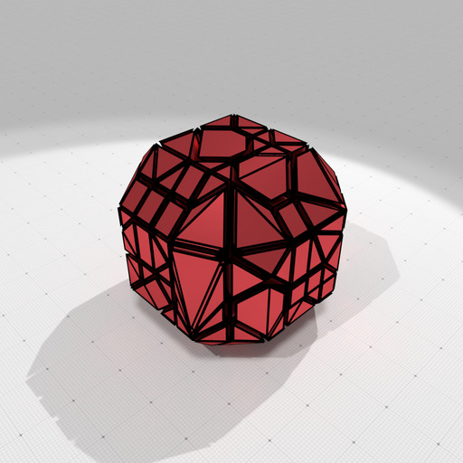
Delaunay cell decomposition of randomly chosen points in a 3D lattice ball with radius 5 | 
Delaunay cell decomposition of randomly chosen points in a 3D lattice ball with radius 10 |
Building a rational polytope (nD)
Building a rational polytope in nD that approximately encloses the given range of real points just requires a call to ConvexityHelper::computeRationalPolytope. You specify the precision as the denominator used in all rational numbers approximating the real point coordinates.
- See also
- exampleQuickHull3D.cpp
- Note
- In opposition with ConvexityHelper::computeConvexHullBoundary the precision must be an integer (no smaller than one), but it acts similarly. This is because the built polytope must be a rational polytope (i.e. constraints are rational).
Building the boundary of a rational convex hull as a surface (3D)
You may simply use one of the two static methods ConvexityHelper::computeConvexHullBoundary to build either a SurfaceMesh or a PolygonalSurface that represents the boundary convex hull of a set of 3D real points. The precision is given as a scale factor that transforms real coordinates before rounding them at the nearest integer.
- See also
- exampleQuickHull3D.cpp
- Note
- In opposition with ConvexityHelper::computeRationalPolytope the precision might be any double value, but it acts similarly. This is because the build object is a V-representation of a polytope, with floating-point point coordinates.
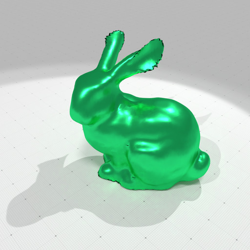
Coarse model of Stanford bunny |
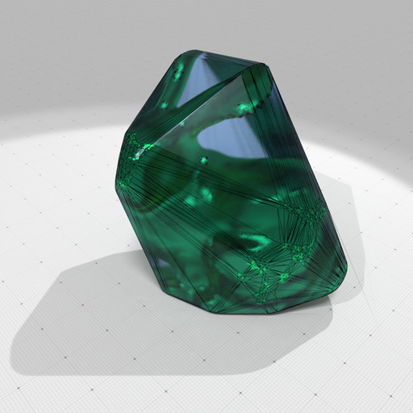
Its convex hull with a precision 100 |
Building the convex hull cell complex of real points (nD)
You can use ConvexityHelper::computeConvexHullCellComplex to build a cell complex that represents the convex hull of the given real points. This complex has exactly 1 full dimension cell, as many codimension 1 facets as the number of polytope faces, and as many vertices than the points lying on the convex hull boundary.
- See also
- exampleQuickHull3D.cpp
Building the Delaunay cell complex of real points (nD)
You may use ConvexityHelper::computeDelaunayCellComplex to approximate the Delaunay cell complex of a range of real points, by specifying a precision.
You can have a look at exampleRationalBallDelaunay3D.cpp for a complete example, with a post-processing that blowns up the 3D cells for visualization.